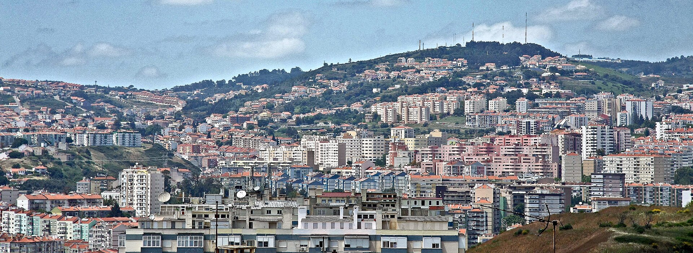

Multimédia
Aqui ficam algumas imagens de Odivelas.



Também podes ver mais vídeos sobre Odivelas no canal oficial da Câmara Municipal de Odivelas no YouTube .
Aqui ficam algumas imagens de Odivelas.

Também podes ver mais vídeos sobre Odivelas no canal oficial da Câmara Municipal de Odivelas no YouTube .